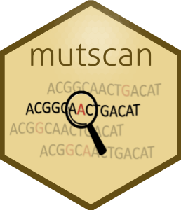

mutscan is an R package to process, statistically analyse and visualise multiplexed assays of variant effect data. The package is under active development, and the functionality and user interface may change. For more detailed information about how to run mutscan, please consult the vignettes.